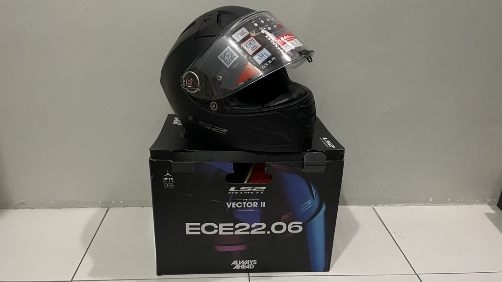
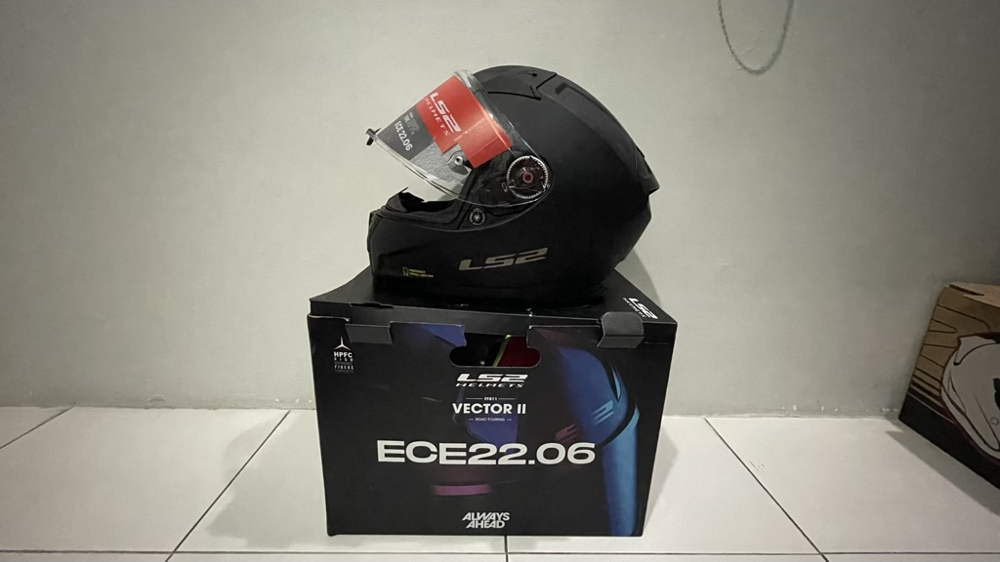
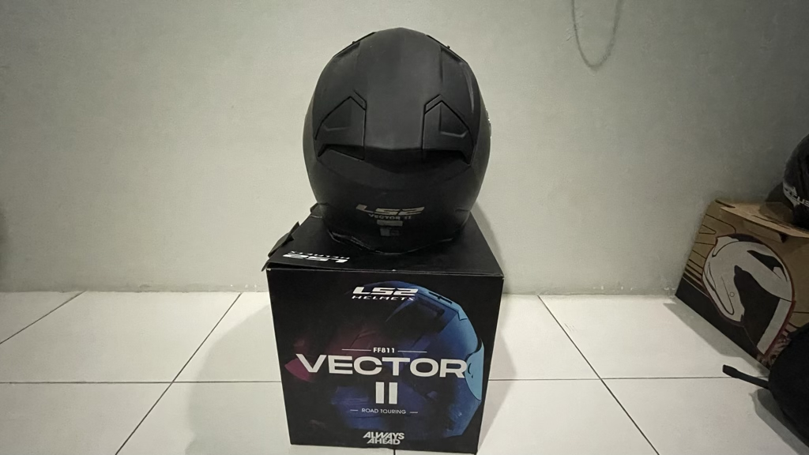
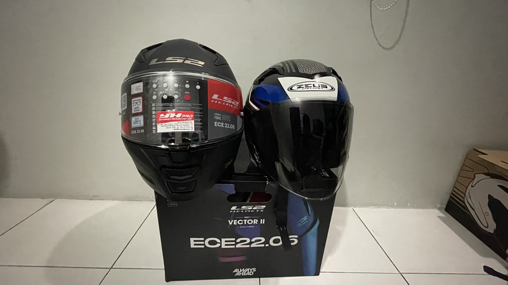
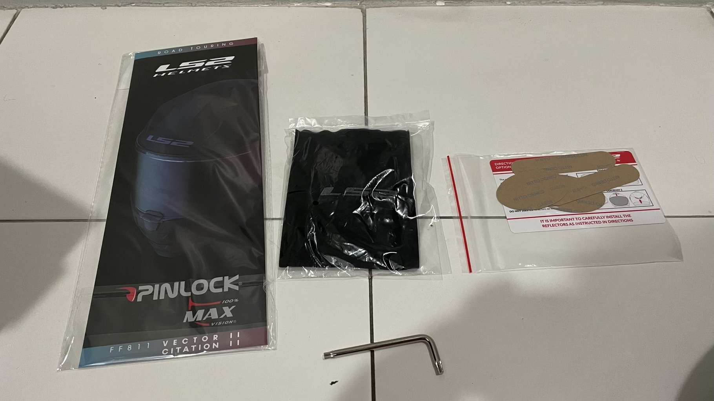
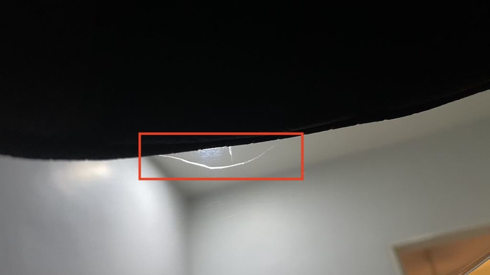

LS2 Vector II Helmet
LS2 is a Chinese motorcycle crash helmet manufacturer and they are fairly new to the helmet business. This company was started by Arthur Liao amd currently headquartered in Spain and all the helmet are being manufactured in China.
- Brand: LS2
- Model: FF811 Vector II
- Certification: ECE 22.06 & DOT
- Material: High Performance Fiber Composite
- Offical Link: Click Here
After searching highs and lows for a suitable full face helmet, finally I found it at Serdang Motorcycle Sdn Bhd where one of the staff, Mr. Alex has identified this particular helmet.
I had this in the largest size available which is XXXXL as my head is kind of big and none of the popular full face helmet can fit into my head. On top of it, I have no other choice of color except Matt Black or Nardo Grey.



Here’s a comparison between LS2 Vector II (XXXXL) and Zeus ZS-627 (XL):

The LS2 Vector II also came with a Pinlock (Anti-Fog), a inflatable helmet donut, reflectors and a screw driver.

Update
12 May 2023 - I have noticed that there’s a crack in the inner visor (sun shade). I have asked Serdang Motorcycle whether am I able to get a replacement for it. As for now, they have reverted that they seek the confirmation from the supplier. I will need to wait for their reply.
